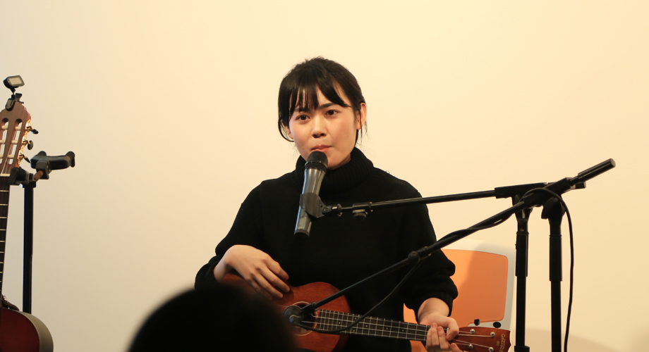

2月7号在广州的289艺术空间听了一场程璧的弹唱会，度过了一个很惬意的晚上。程璧一身素雅的黑色毛线裙，坐在大家面前，抱一把吉他，旁边只有一架键盘。简单的配乐，安静的吟唱，你只需要闭上眼，静静听就行。整个晚上我们安坐台下，和200多位观众一起，像经历了一场睡前的催眠仪式。为诗谱曲，程璧不是第一人，然而她整个人流露出的恬淡气质，纯净不加修饰的声音，加上最简单的和弦和配器，和缓缓吟唱出的诗句就那么贴合地融为一体，就像她在唱《枯木》前提到她喜爱的东方传统美学，那样的枯淡，静寂之美也同样融进了她的演绎。